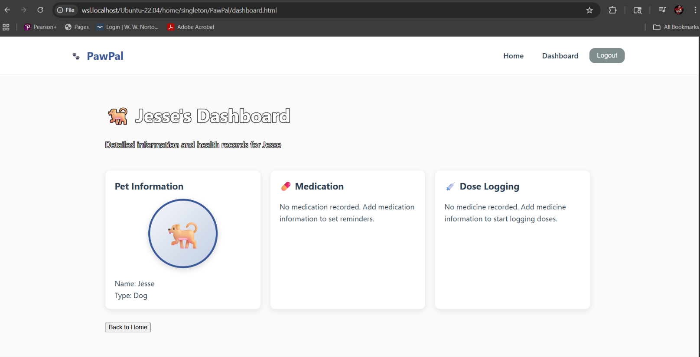
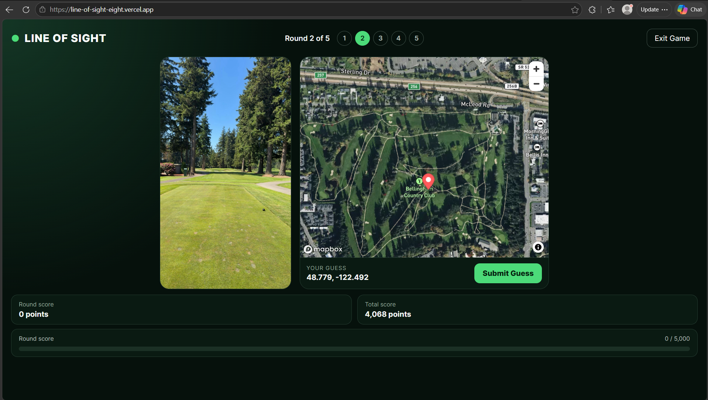

A selection of academic, independent, and real-world work showing how I apply technical concepts to practical challenges.
PawPal
Academic Team Project · Pet Health Management

PawPal is a pet health management web application created as part of a computer science team project. It was designed to help pet owners organize pet information, medications, and dose tracking through a central dashboard.
My contributions: Collaborated on developing the application and its interface, organizing pet information and working toward a user-friendly experience.
Technologies: Python, Flask, HTML, CSS, JavaScript, SQLite, and GitHub.
Outcome and lessons: Created a dashboard interface with pet profiles, medication information, and dose-logging sections. The project strengthened my experience with web development, teamwork, and designing around user needs.
Evidence: Dashboard screenshot shown above.
LINE OF SIGHT
Full-Stack Golf Location Game · In Development

LINE OF SIGHT is a golf-themed location guessing game based on another person's original concept. Players use photographs from a golf course to guess locations on an interactive map and receive points based on geographic accuracy.
My contributions: Helping translate the original concept into a working application using AI-assisted coding tools, reviewing and refining frontend and backend functionality. The backend code includes five-round game sessions, randomized photo selection, geographic distance calculations, and scoring.
Technologies: Python, FastAPI, Pydantic, React, TypeScript, HTML, CSS, Vite, and REST APIs.
Outcome and lessons: The project remains in development. It has helped me gain experience understanding full-stack architecture, refining code, and connecting a user-facing game with backend logic. The scoring uses geographic distance and an exponential points formula.
Evidence: Application screenshot shown above. Play LINE OF SIGHT (live website).
Ritter Project Management Website
WordPress · Website Content Maintenance
Assisted with content maintenance for Ritter Project Management's existing business website. The goal was to keep staff information and imagery current and accurate.
My contributions: Used the WordPress administration dashboard to remove former employees, remove outdated photos, and update staff biographies based on requested changes.
Technologies: WordPress, content management systems (CMS), and website administration.
Outcome and lessons: Helped keep the company's public-facing information up to date and gained experience making careful edits to an established business website based on stakeholder needs.
Evidence: View the live Ritter Project Management website. The public site shows its current state, not a before-and-after record of my edits.